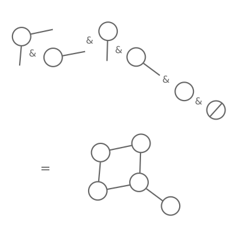

This article was originally published on Medium (link)
If you've ever read articles about functional programming in Python, you probably already know about map, filter, and
reduce, which are useful functions for functional programming using lists. However, if you're like me, you may have
sometimes felt that articles like that are a bit shallow, and don't really teach you anything about how to use Python as
a functional programming language in general. I'd like to show you a more challenging functional programming problem,
and demonstrate that Python has a great syntax for writing elegant, concise functional code.
This will be a four-part series. In this part, I'll be describing the problem of functional graph algorithms, and setting up basic data structures. In Part 2, I'll implement the basic functions we'll need to write more expressive algorithms, which we'll cover in Part 3. Finally, I'll give you my final thoughts on this exercise (a "retro", if you like) in Part 4.
You can find all of the code for these articles at
the inductive-graph-algorithms repository over on GitHub.
Many programmers will have had to do some work with data structures like trees, such as JSON data or web documents, or graphs, such as are used in data processing frameworks like Airflow. A few months ago, I was working on designing a system with a graph-like structure. I'm a big fan of functional programming, so I started wondering: how does a functional program implement algorithms like topological sorting?
In the world of imperative programming, topological sorting is not very difficult — Kahn's algorithm and a depth-first search algorithms are both described on the Wikipedia page linked above. However, both rely on stateful mutations of the graph's nodes, because they need us to keep track of visited nodes via a label. Stateful changes should not be part of our functional implementation.
After a little bit of googling, I came
across this paper
(Erwig 2001), which describes the principle of "inductive"
graphs, and forms the basis of Haskell's functional graph library fgl. I'll try to quickly explain inductive graphs by
analogy to a list, but for a more detailed explanation see
this StackExchange answer and its linked blog post — they're
both excellent.
When we take a sequence like a list or a tuple, and remove an item, we produce a pair: the item, and a new list or tuple
with all the existing items except for the one we just removed. We can then repeat the operation on the new list.
Functions like map, filter, and reduce can be concisely defined because of this repetition.
Basic operation for functions over lists: 1) Start with a list of any length. 2) Remove the first item and perform some operation. 3) You now have a smaller list. 4) Repeat from step 2.
An inductive graph has a similar property. Instead of removing a single item, we remove a node and all of its connected
edges, returning a graph without any reference to the node we just removed. We can then repeat the operation on the new
graph. This means we can define functions analogous to map, filter, and reduce for an inductive graph, and go
further,
implementing depth-first walks, shortest-path algorithms, and, indeed, topological sorts.

Basic operation for inductive functions over graphs: 1) Start with any graph. 2) Remove a node and all of its edges and perform some operation. 3) You now have a smaller graph. 4) Repeat from step 2.
The paper describes its data structures and functions in Haskell syntax, so we need to work out how to convert this into Python. I've generally adopted the following approach:
__iter__
so that we can use Python's destructuring (for example x, *y = […]) to closely match the definition.frozenset, rather than plain sets, again to
avoid
accidental mutation.heapq package, but these rely on mutating lists in-place. I implemented a wrapper class which helps ensure
immutability.The very first type described in the paper is the type
type Node = Int
That's right, nodes are integers. Actually, we can think of this as being like the index of an item in the list — the node type is the "index" of the node in the graph. In Python:
class Node(int):
"""A node.
For convenience, nodes are represented by integers.
"""
Simple!
type Adj b = [(b, Node)]
This is a bit more abstract. It means that Adj is a sequence of tuples. Each tuple represents an edge in the graph,
and
b represents the edge's label, which can be anything, so we leave it generic. Note that edges are directed: Adj may
describe a connection to or from a given node, but by itself it doesn't care which.
class Adj(collections.abc.Sequence[tuple[B, Node]]):
"""Adjacency relationships."""
labeled_nodes: tuple[tuple[B, Node], ...]
def __init__(self, labeled_nodes: tuple[tuple[B, Node], ...] = ()):
self.labeled_nodes = labeled_nodes
def __repr__(self):
return f"Adj({self.labeled_nodes!r})"
def __len__(self):
return len(self.labeled_nodes)
def __getitem__(self, item):
return self.labeled_nodes[item]
def __eq__(self, other):
return self.labeled_nodes == other.labeled_nodes
def __add__(self, other):
return Adj(self.labeled_nodes + other.labeled_nodes)
I've made this class inherit from the Sequence class, which means if we implement __len__ and __getitem__ we get
iteration for free. I've also specified __eq__ and __add__ so that the class behaves like a tuple.
Context
type Context a b = (Adj b, Node, a, Adj b)
More abstract again! This says that a "context" comprises four parts: an adjacency relationship, a node, the label of
that node (a), and another adjacency relationship. The first Adj represents edges directed towards Node, called
"predecessors", and the second Adj represents edges directed away from Node, called "successors". It's important to
note
that, for inductive graphs, this doesn't have to be all of the connected nodes, because other Contexts may define
additional Adj relationships.
There are two generic types here: a is the type of the node's label, and b is the type of the edge's label.

Anatomy of a "Context": predecessor edges pointing to this node, successor edges pointing away from this node, and a label of arbitrary type on the node itself. Note that a "Context" doesn't necessarily refer to all of the edges connecting into a node, because these might be parts of other "Context"s.
class Context(typing.Generic[A, B]):
"""A context.
A node's context describes (some of) its surroundings, including its label, its
adjacent predecessors and its adjacent successors.
"""
predecessors: Adj[B]
node: Node
label: A
successors: Adj[B]
def __init__(
self,
predecessors: Adj[B],
node: Node,
label: A,
successors: Adj[B],
):
self.predecessors = predecessors
self.node = node
self.label = label
self.successors = successors
def __repr__(self):
return f"Context({self.predecessors!r}, {self.node!r}, {self.label!r}, {self.successors!r})"
def __eq__(self, other):
return (
self.predecessors == other.predecessors
and self.node == other.node
and self.label == other.label
and self.successors == other.successors
)
Finally, we can describe a graph itself:
data Graph a b = Empty | Context a b & Graph a b
This says that a graph is either an empty graph OR a context attached (using the operator &) to a graph.
Python doesn't have variant types like this, but we can use inheritance instead. We'll define an abstract Graph class
that will have two subclasses: EmptyGraph and InductiveGraph.
class Graph(abc.ABC, typing.Generic[A, B]):
"""An abstract graph"""
The InductiveGraph will contain a "head", which is the Context a b, and a "tail", which is another graph.
class EmptyGraph(Graph[A, B]):
"""An empty graph, containing no nodes or edges."""
def __repr__(self):
return "EmptyGraph"
class InductiveGraph(Graph[A, B]):
"""An inductive graph.
The `head` of the graph is a context that can only refer to nodes in the `tail`,
which is also a graph.
"""
head: Context[A, B]
tail: Graph[A, B]
def __init__(self, head: Context[A, B], tail: Graph[A, B]):
self.head = head
self.tail = tail
def __repr__(self):
return f"{self.head!r} & {self.tail!r}"
As well as the data itself, we can implement the constructor operator & using Python! In the paper, we imagine
building
up graphs right-to-left, starting with the empty graph, and adding on context until we reach the whole graph:
Context(...) & Context(...) & Context(...) & EmptyGraph()

Principle for constructing an inductive graph: start with the empty graph (right hand side). Then, attach the first context — the "Adj" values must be empty, because there are no nodes! Then, attach contexts one by one; each can only refer to nodes that are already in the graph.
Each context must only refer to nodes which are already in the graph (or, to make loops work, itself).
In Python, operators resolve left-to-right, so to emulate this behaviour I've introduced a _ContextPartial class which
can collect up left-hand-side contexts until it reaches a graph, at which point it resolves. As a result, we can define
the __and__ operator on the Context class like so:
class Context(typing.Generic[A, B]):
def __and__(self, other):
match other:
case Context():
return _ContextPartial((other, self))
case InductiveGraph() if self.node in other.nodes():
raise NodeExistsError(
f"context {self} refers to existing node {self.node} in graph {other}"
)
case InductiveGraph() if disjoint_nodes := tuple(
node
for node in self.pre + self.suc
if node not in other.nodes() and node != self.node
):
raise NodeDoesNotExistError(
f"context {self} "
f"refers to adjacent nodes {disjoint_nodes} "
f"which are not in graph {other}"
)
case InductiveGraph() | EmptyGraph():
return InductiveGraph(self, other)
This describes the behaviour when we do something like:
context_a & context_b & EmptyGraph()
When the context is added to an inductive graph where the node is already in the graph, or if the context's Adj nodes
refer to nodes that are not in the graph, we have to raise an error. Otherwise, regardless of whether it is an
inductive
graph or an empty graph, we can construct a new graph with the context as the head.
There are a couple of methods and properties here — .nodes(), .pre, .suc — which we haven't seen yet. More on
those in
the next part!
After these definitions, we're ready to follow the first example in the paper, Figure 1, which constructs a graph using edges labeled "left", "right", "up", and "down", and nodes labeled "a", "b", and "c".
([("left", 2), ("up", 3)], 1, "a", [("right", 2)]) &
([], 2, "b", [("down", 3)]) &
([], 3, "c", []) &
Empty
becomes in Python:
graph: InductiveGraph[str, str] = (
Context(
Adj((("left", Node(2)), ("up", Node(3)))),
Node(1),
"a",
Adj((("right", Node(2)),)),
)
& Context(Adj(), Node(2), "b", Adj((("down", Node(3)),)))
& Context(Adj(), Node(3), "c", Adj())
& EmptyGraph()
)

The node "a", with two predecessors and one successor, is attached to "b", with one successor, and then attached to "c", with no predecessors or successors, and finally the empty graph.
In the next article, we'll work into the next parts of the paper, which describes the properties needed from the inductive graph data types, and implement them in Python, and use them to implement some simple graph algorithms. Then, in the final section, we'll tackle some more difficult algorithms like topological sorting. Thanks for keeping up with me so far!
Erwig, Martin. "Inductive graphs and functional graph algorithms." Journal of Functional Programming 11.5 (2001): 467–492.